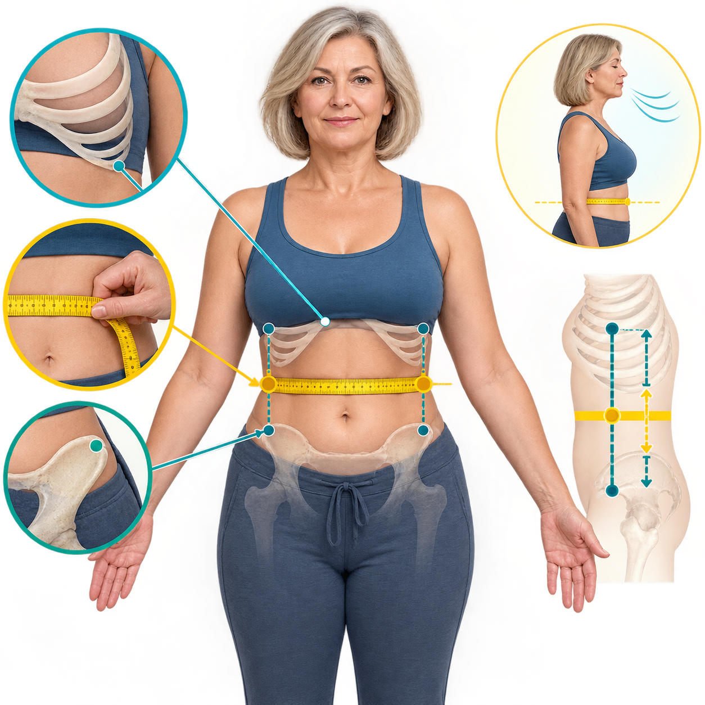

Zmierz pas.
Sprawdź proporcję.
WHtR porównuje obwód talii ze wzrostem. Najłatwiejsza zasada do zapamiętania: talia powinna być mniejsza niż połowa wzrostu.
Gdzie dokładnie przyłożyć taśmę?
Nie mierz w najszerszym ani najwęższym miejscu „na oko”. Znajdź dwa punkty kostne i wybierz środek między nimi.

- 1Znajdź dwa punkty
Wyczuj dolną krawędź ostatniego żebra oraz górną krawędź kości biodrowej.
- 2Ustaw taśmę pośrodku
Poprowadź ją wokół brzucha poziomo, bez skręcenia i bez wciskania w skórę.
- 3Oddychaj normalnie
Stań swobodnie i odczytaj wynik po naturalnym wydechu. Zapisz pomiar do 0,5 cm.
Tutaj pojawi się proporcja
Wynik jest prostym narzędziem przesiewowym. Nie rozpoznaje cukrzycy, nadciśnienia ani choroby serca.
- WHtRstosunek talii do wzrostu
- ½ wzrostuTwój punkt odniesienia
- Trendzapis kolejnych pomiarów
—
Zapisane pomiary
Nie zapisano jeszcze żadnego pomiaru. Historia pojawi się dopiero po użyciu przycisku „Zapisz pomiar”.
| Data | Talia | WHtR | Zmiana |
|---|
Historia pozostaje w pamięci tej przeglądarki. Nie jest wysyłana do FitPo50 i można ją usunąć jednym przyciskiem.
Mniej niż połowa wzrostu
NICE klasyfikuje WHtR 0,40–0,49 jako zdrowy poziom centralnego otłuszczenia, 0,50–0,59 jako podwyższony, a 0,60 lub więcej jako wysoki. Klasyfikacja dotyczy przede wszystkim dorosłych z BMI poniżej 35.
WHtR uzupełnia ocenę, ale nie zastępuje ciśnienia, glukozy, lipidogramu ani rozmowy o całkowitym ryzyku.
Zalecenia NICE →Technika pomiaru WHO →Przegląd badań nad WHtR →Wskaźnik pomaga ocenić kierunek
Nie określa samodzielnie stanu zdrowia ani tempa odchudzania. Niezamierzony spadek masy lub obwodu, osłabienie i inne nowe objawy wymagają osobnej oceny.